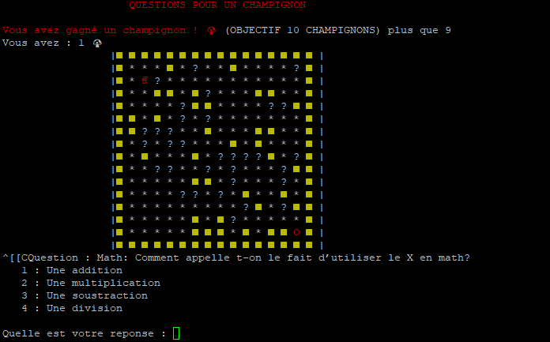
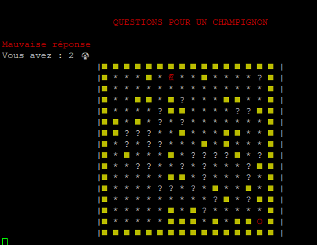
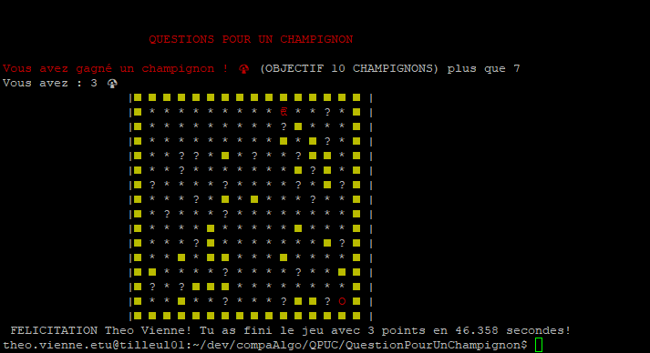
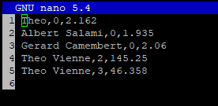

Question pour un champignon est un jeu Ludo pédagogique ayant 2 buts :
Le jeu consiste en un labyrinthe généré aléatoirement dans lequel le joueur doit se déplacer de case en case jusque la sortie. Pour se faire il devra répondre à un certain nombre de questions le plus vite possible.
 Ecran de fin du jeu
Nous avons également ajouté un tableau des scores afin d’ajouter un peu de concurrence parmi les joueurs.
Le jeu est trouvable sur Github. Il y’a un readMe permettant d’expliquer comment lancer le jeu.
Retour